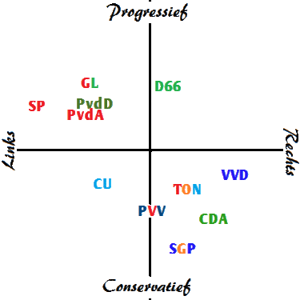

Politieke partijen
1. Ik vind dat politiek nodig is om het land en de gemeentens daar in te besturen door naar de inwooners te luisteren.
2. Voor het stemexamen heb ik niet gehaald, ik had 57% goed.
3. Een democratie heeft een volksvertegenwoordiging, die rechtstreeks door de bevolking wordt gekozen. Deze volksvertegenwoordiging heeft in elk land een andere naam: Tweede Kamer in Nederland, Nationale Vergadering in Frankrijk en Bondsdag in Duitsland.
4. Het kiesstelsel van Nederland is op evenredige vertegenwoordig (EV) gestoeld en kent geen districtenstelsel. De lidstaten van de Europese Unie kennen verschillende soorten kiesstelsels. Evenredige vertegenwoordiging en het meerderheidsstelsel wisselen elkaar af.
5. Je mag stemmen als je een nederlandse nationaliteit hebt en 18 of ouder bent.
6.1 (VVD)Het liberalisme is een politieke stroming die is ontstaan in de 18e eeuw tijdens De Verlichting. Het voornaamste uitgangspunt van het liberalisme is het streven naar grote vrijheid van het individu op alle terreinen van het (maatschappelijke) leven.
6.2 (SP)Het socialisme is een politiek-maatschappelijke stroming die de (economische) gelijkheid van iedereen voorop stelt en ook een verzamelterm is voor ideologieën of politieke stromingen met dezelfde doelstellingen. Naast gelijkheid worden sociale rechtvaardigheid en solidariteit aan het socialisme gekoppeld.
6.3 (CDA, ChristenUnie en SGP)Confessionalisme is een ideologie waarbij politieke partijen hun mening baseren op religie. In Nederland zijn dit de partijen CDA, ChristenUnie en SGP. Door de grondwet van 1848 werden de katholieken niet langer als minderwaardige burgers behandeld.
6.4 (Groenlinks en Partij voor de dieren)Ecologisme is een politiek-maatschappelijke stroming die gebaseerd is op de ecologie. Een wetenschap die de dynamiek van de wisselwerking tussen organismen, hun populaties, levensgemeenschappen en omgevingen bestudeerd. In het Engels spreekt men meestal van environmentalism, soms vernederlandst tot environmentalisme.
6.5 (SGP)Het conservatisme is een politieke, ethische en culturele gezindheid die zich grondvest op de traditie. Het begrip "conservatisme" is afgeleid van het Latijnse conservare, dat "beschermen, in ongeschonden toestand bewaren" betekent.
6.6 (PVV)Populisme is een politieke stroming of stijl die sommige politieke partijen hanteren. Populistische partijen stellen in hun standpunten en retoriek vaak het volk centraal en dragen sterke gevoelens uit tegen het establishment.
6.7 Het pragmatisme is een filosofische denkwijze die gebaseerd is op het idee dat een theorie pas kloppend is als deze is getoetst aan de praktijk. Iets is dus pas waar als het uitvoerbaar en toepasbaar is. In de negentiende eeuw ontstond deze stroming binnen de filosofie in Amerika.
7. Links houd in dat je veel wilt veranderen. rechts wilt zegen dat het moet blijven hoe het is. en in het midden spreekt voor zichzelf.
8. Benoem van de 8 politieke partijen uit je website aan welke kant zij staan.
9. Een rechtsstaat is een staat waarvan de macht gereguleerd en beperkt wordt door het recht. De rechtsstaatgedachte is ontwikkeld tegen de praktijk van absolute vorsten (zoals Lodewijk XIV). Vanuit de rechtsstaatgedachte is willekeur te voorkomen en zijn rechtszekerheid en rechtsgelijkheid te bevorderen.
10.1 Alle burgers hebben gelijke rechten
10.2 Het legaliteitsbeginsel
10.3 De overheid moet zich aan wetten houden
10.4 Grondwetten
11. De trias politica, driemachtenleer of scheiding der macht(en) is een theorie van de staatsinrichting waarin de staat opgedeeld is in drie organen die elkaars functioneren bewaken.
12. Het land besturen.
13. Iemand komt met het idee voor een wet. Dan gaat dat idee naar de eerste kamper en daarna naar de tweede kamer.
14. Geen alcohol voor je 18de, verzekering en belasting.
15. Er zijn 150 leden in de tweede kamer en ze worden gekozen door het volk.
16. VVD(33), SP(14), SGP(3), PVV(20), PvdD(5), PvdA(9), GL(14), FvD(2), DENK(3), D66(19), CU(5), CDA(19) en 50PLUS(4).
17. De tweede kamer kan wetvoorstellen goed keuren en veranderen als dat nodig is./p>
18. Budgetrecht, onderzoek- en anqueterecht, vragenrecht, moties indienen, amendementsrecht en recht van initiatief.
19. De 75 leden van de Eerste Kamer worden gekozen door de leden van de twaalf Provinciale Staten. De leden van Provinciale Staten worden op hun beurt gekozen door de burgers van de provincie.
20. Meestal dient de regering een wetsvoorstel in, maar ook leden van de Tweede Kamer kunnen het initiatief hiertoe nemen (een zgn. initiatiefvoorstel). De Eerste Kamer komt in het wetgevingstraject pas aan bod nadat de Tweede Kamer het wetsvoorstel heeft aangenomen. De Eerste Kamer kan een wetsvoorstel niet meer wijzigen.
21. de eerste kamer heeft minder leden en minder rechten dan de tweede kamer.
22. Vergadering bijwonen, Contact opnemen met politici, Lid worden van een politieke partij, het indienen van een petitie, burgerinitiatief of referendum of het houden van een demonstratie en Stemmen.